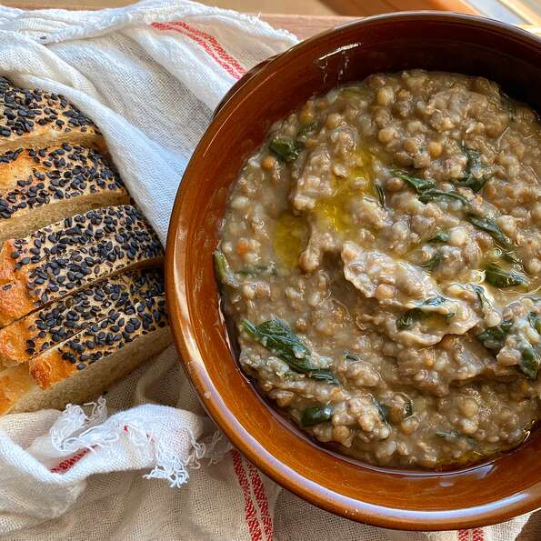

Lentil and buckwheat soup

Description
Lentils and buckwheat simmer to make a hearty stew. This is a typical 'zuppa' for a winter evening in Italy.
Serve with crusty bread topped with a bit of extra virgin olive oil. Typical to most Italian food, this is healthy and delicious.
Ingredients
- 1 cup brown lentils
- 1 tablespoon olive oil
- 1 small onion, grated
- 1 small carrot, grated
- 2 bay leaves
- 4 ½ cups low-sodium vegetable broth, divided
- ¾ cup raw buckwheat groats
- 1 (9 ounce) package fresh baby spinach
- 3 tablespoons extra-virgin olive oil
Ingredients
- Soak lentils in a bowl of cold water for 1 hour. Drain and set aside.
- Heat oil in a Dutch oven or heavy-bottomed stew pot over medium heat. Add grated onion and carrot and saute until soft, 3 to 5 minutes.
Add lentils and bay leaves and stir until coated with oil. Pour in 3 cups vegetable broth, stir, and bring to a boil. Leave at a slow boil for 10 minutes.
- Reduce heat to a simmer and add buckwheat. Simmer until lentils are soft but not mushy and buckwheat is cooked through, about 25 minutes, adding remaining broth if needed.
Remove from the heat and fold in fresh spinach until wilted. Remove bay leaves.
- Serve hot with a 1/2 tablespoon olive oil drizzled on top of each portion.